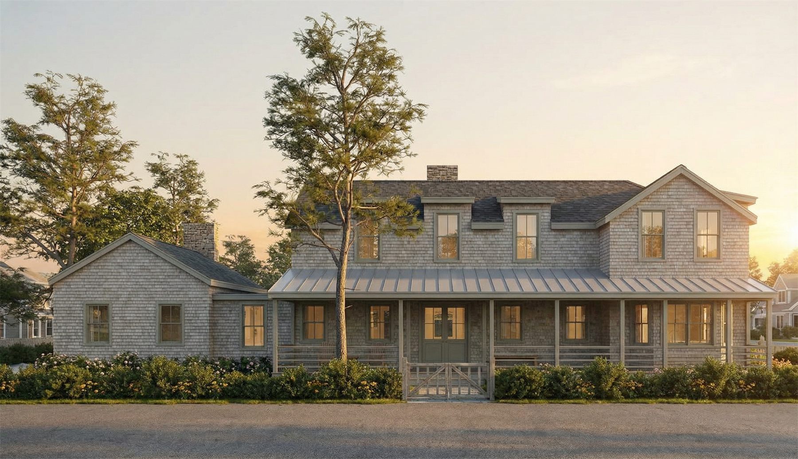
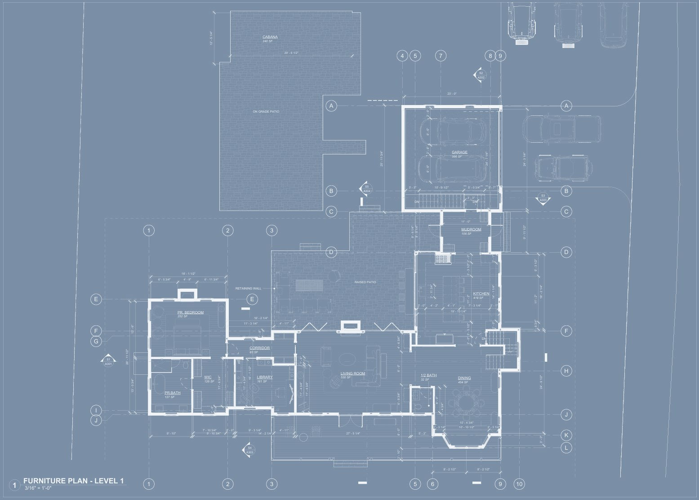
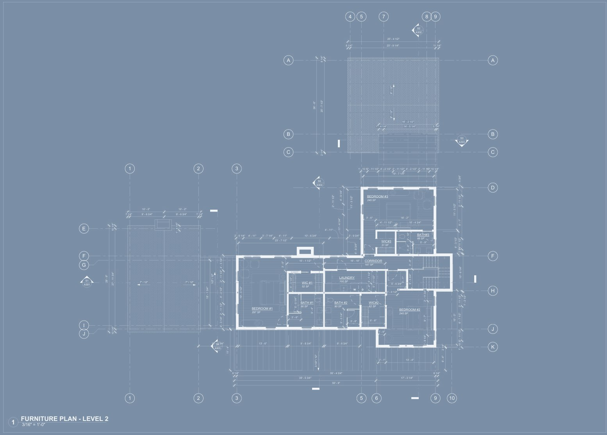
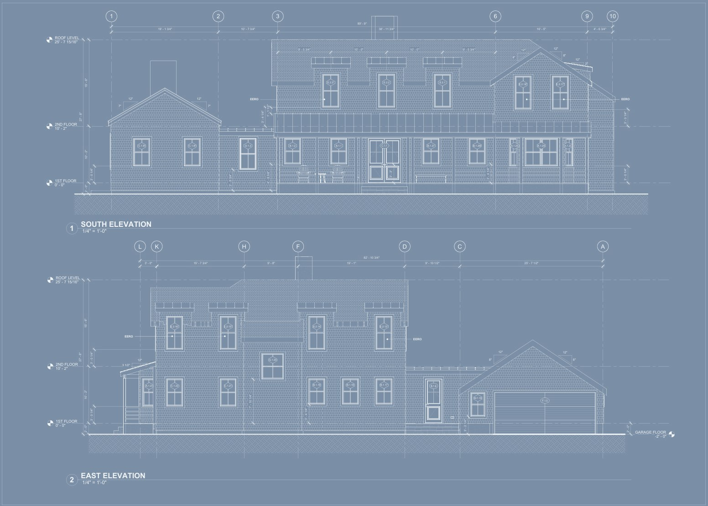

Privacy and community, held in balance.
This home occupies an unusual location — a popular, communally minded neighborhood in Falmouth Heights — yet is designed as a country retreat where a family can feel a genuine sense of removal. The outbuildings collectively enclose a large courtyard replete with pool, outdoor kitchen, and fireplace, creating an interior world within a social one.
At the same time, the project aims to earn its place in a neighborhood it benefits from and hopes to benefit in return. As a large new construction, we disaggregate the mass through varied roof heights, dormers, and passageways — one forming a mudroom, the other a library, study, and TV room.
The design also responds to the late 19th-century buildings nearby, in which rooms have discrete borders rather than the open plans that followed. At Jericho Path we aim for the best of both worlds — through corridors, wide framed openings, bays, and ceiling treatments that define space without enclosing it.





